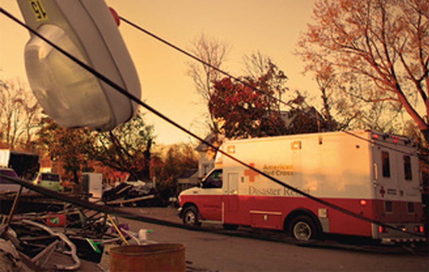
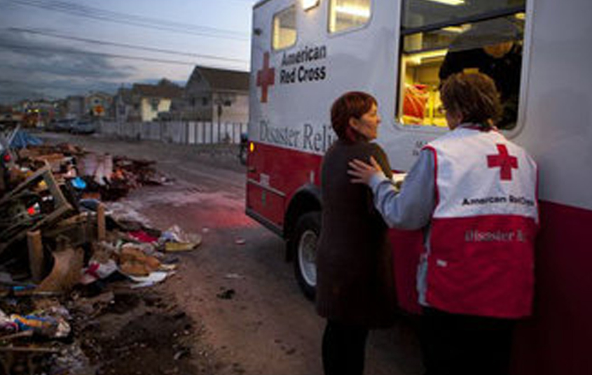
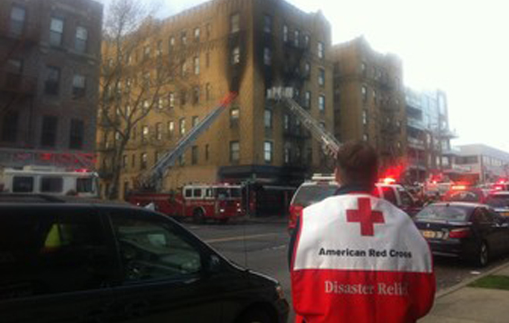

RedCross

American Red Cross
Red Cross One-Month Report on Superstorm Sandy
The American Red Cross today issued a progress report on its efforts over the past month to provide food, water, shelter, relief supplies, healthcare and other assistance to people affected by Superstorm Sandy.
Hurricane Sandy Relief Inquiry
Use this online form to inquire about Hurricane Sandy assistance from the Red Cross and referrals to other government agencies.
Red Cross Responds to Everyday Disasters
Although the American Red Cross is in the midst of its Superstorm Sandy response, routine disasters have not taken a break across the Greater New York region.